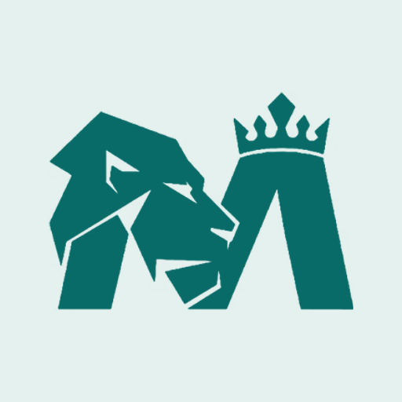

魔法家族 · 创作灵感库
灵感，从这里开始。
找一个喜欢的效果，做成自己的作品。
图片、Skills与工作流可浏览；视频与分镜待开放。选择Skill或工作流会进入对应资源区。
视觉风格
视频与分镜待开放。你可以先探索图片，或使用 Skills 和工作流。
原创示例 · 提示词待实测

魔法家族魔法工坊魔法家族 · 创作灵感库
找一个喜欢的效果，做成自己的作品。
图片、Skills与工作流可浏览；视频与分镜待开放。选择Skill或工作流会进入对应资源区。
视频与分镜待开放。你可以先探索图片，或使用 Skills 和工作流。